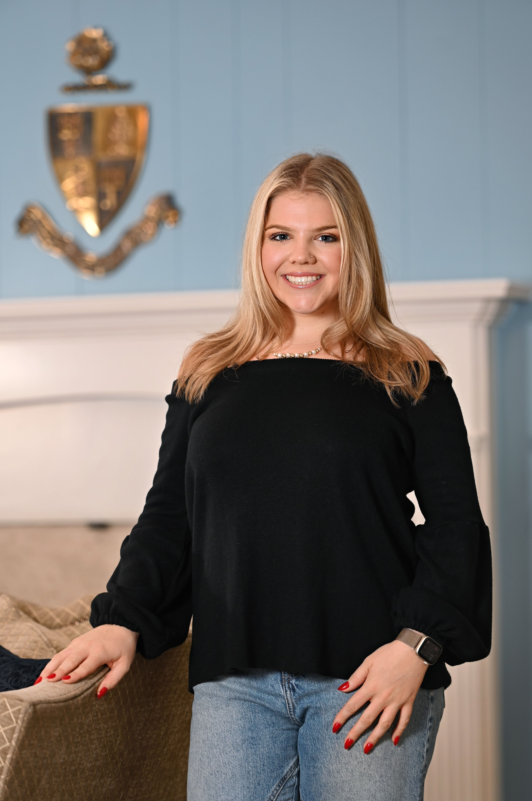

About Me
Hi, I’m Kameron Jester, a passionate and driven marketing professional with a Bachelor’s degree in Communication Arts on the Communication Science and Rhetorical Studies track and a Digital Studies Certificate from the University of Wisconsin-Madison. I thrive on building meaningful connections, solving problems, and driving collaboration to achieve results. My outgoing nature, strategic mindset, and strong communication skills allow me to craft compelling brand narratives and engage audiences effectively.
